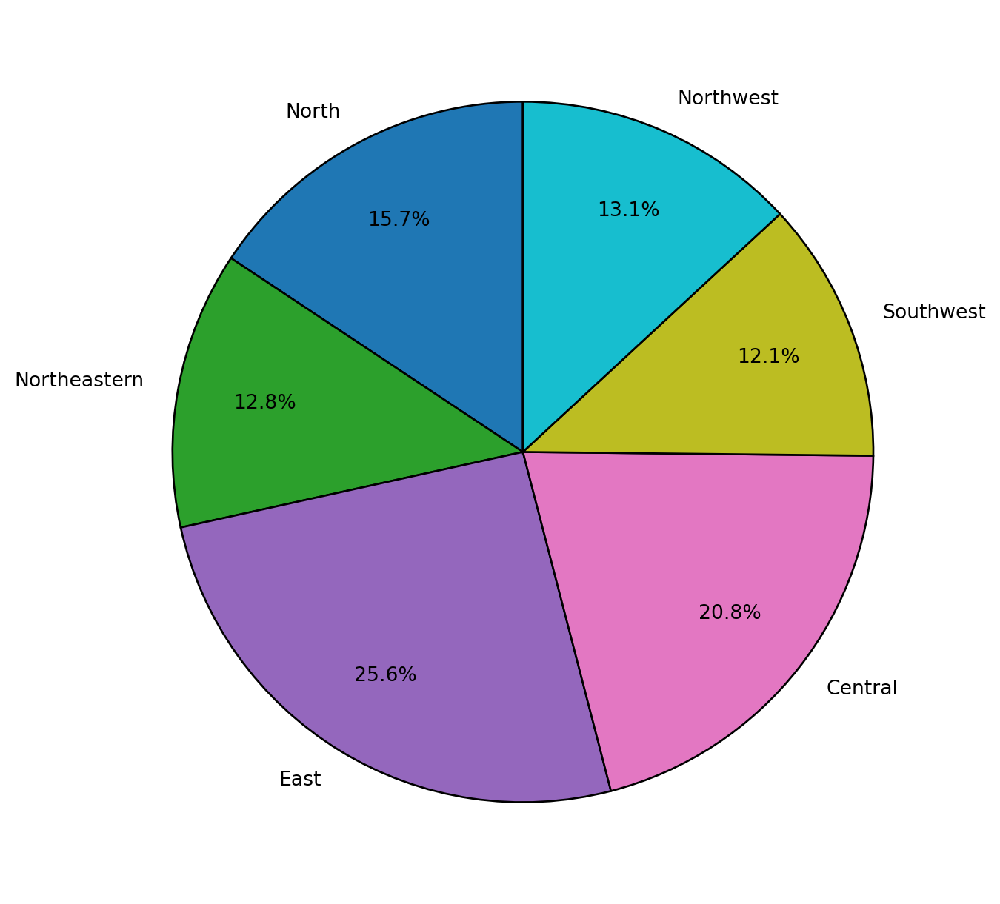
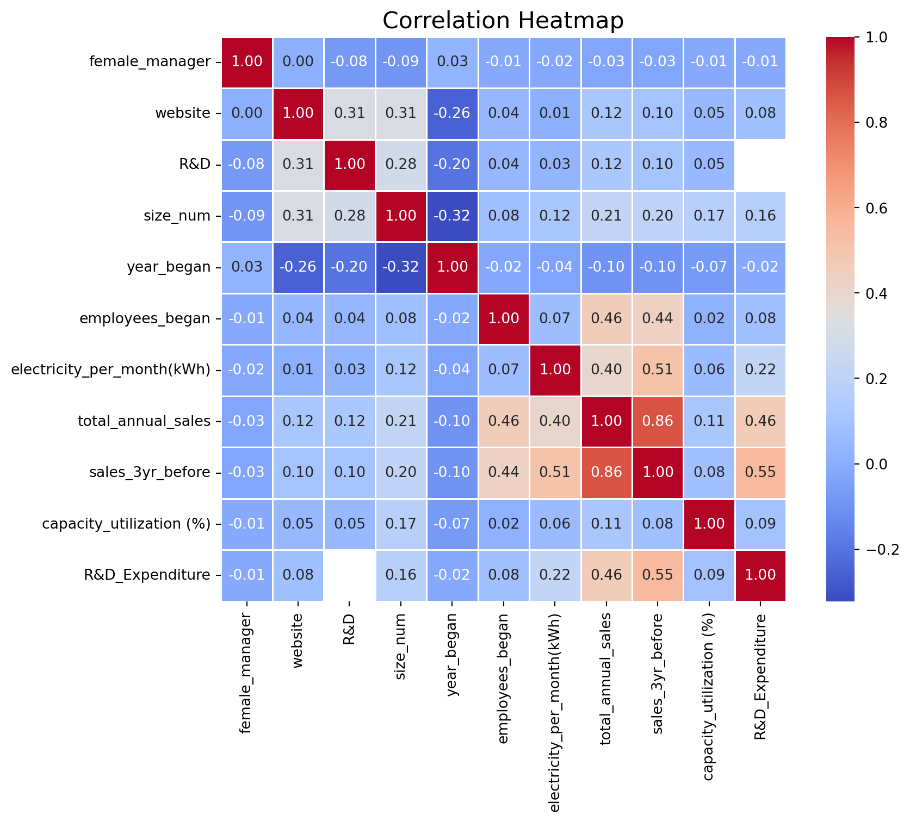

import numpy as np
import pandas as pd
import matplotlib.pyplot as plt
%run pyfiles/set_chinese_font.py探索性数据分析
探索性数据分析(Exploratory data analysis, EDA)是在进行推断性统计建模之前， 对数据的分布、变量之间的关系、观测之间的聚集等特性用汇总统计、作图等方法进行探索。
本部分主要包含两部分内容，一是常用的统计描述分析，如集中趋势的度量、离散程度的度量、分布形状的度量等；另一部分内容是结合经济学研究中常见的指标的计算方法，给出计算过程，并将结果以图形的方式展示出来，如直方图、散点图、箱线图等。
本章涉及到的数据集有： - World Bank Enterprise Surveys数据； - 中国家庭健康营养调查数据 - 中国家庭跟踪调查数据（CFPS）等为例 - BACI双边贸易流数据；
首先还是载入必要的库：
样本统计量
描述统计量
给定观测值，\(\{x_{1},\cdots, x_{n}\}\)，常用的描述统计量有：
样本均值定义为：
\[ \bar{x} = \frac{1}{n}\sum_{i=1}^{n}x_{i} \]
样本方差定义为：
\[ Var(x) = \frac{1}{n-1}\sum_{i=1}^{n}(x_{i} - \bar{x})^{2} \]
样本标准差定义为： \[ s_{x} = \sqrt{Var(x)} \]
样本协方差定义为：
\[ S_{xy} = \frac{1}{n-1}\sum_{i=1}^{n}(x_{i}-\bar{x})(y_{i} - \bar{y}) \]
样本相关系数
\[ r = \frac{cov(x,y)}{\sigma_{x}\sigma_{y}} = \frac{\sum_{i=1}^{n}(x_{i}-\bar{x})(y_{i}-\bar{y})}{\sqrt{\sum_{i=1}^{n}(x_{i}-\bar{x})^{2}}\sqrt{\sum_{i=1}^{n}(y_{i}-\bar{y})^{2}}} \]
变异系数
标准差与平均数的比值称为变异系数（Cefficient of variation）
\[ CV = \frac{s_{x}}{\bar{x}} \]
偏度系数 具有 \(n\) 个值的样本的样本偏度为： \[ g_{1}={\frac {m_{3}}{{m_{2}}^{3/2}}}={\frac {{\tfrac {1}{n}}\sum _{i=1}^{n}(x_{i}-{\overline {x}})^{3}}{\left({\tfrac {1}{n}}\sum _{i=1}^{n}(x_{i}-{\overline {x}})^{2}\right)^{3/2}}} \]
样本峰度系数 对于具有 \(n\) 个值的样本的样本峰度为： \[ g_{2}={\frac {m_{4}}{m_{2}^{2}}}-3={\frac {{\tfrac {1}{n}}\sum _{i=1}^{n}(x_{i}-{\overline {x}})^{4}}{\left({\tfrac {1}{n}}\sum _{i=1}^{n}(x_{i}-{\overline {x}})^{2}\right)^{2}}}-3 \]
读取数据
这里使用世界银行中国企业调查（2024）数据，阐释实际应用中如何进行进行统计描述。原数据为Stata 格式的数据，可以使用Pandas中pd.read_stata()函数读取：
data = pd.read_stata('datasets/China-2024-full-data.dta',
convert_categoricals=True)
data.shape
# data.head()(2189, 340)数据集中大量使用了值标签的方式，这里convert_categoricals = True将数据保留为分类变量，而非底层数值。
可以看到原数据包含2189个观察值和340个变量。原数据集变量数量太多为便于展示，我们仅保留其中一些。各变量的准确定义请参见世界银行网站上的DATA DESCRIPTION：
variables_selected = ["idstd","id", "a4a", "a6a", "a3a",
"b1", "b5", "b6", "b7a",
"c32", "c22b", "d2", "n3", "f1",
"h8", "h9","m1a"]
col_names = ["id","industry", "size", "region", "status",
"year_began", "employees_began",
"female_manager", "electricity_per_month(kWh)",
"website", "total_annual_sales","sales_3yr_before",
"capacity_utilization (%)", "R&D",
"R&D_Expenditure", "biggest_obstacle"]
df = data[variables_selected].copy().set_index(keys="idstd")
df.columns = col_names
df.head()| id | industry | size | region | status | year_began | employees_began | female_manager | electricity_per_month(kWh) | website | total_annual_sales | sales_3yr_before | capacity_utilization (%) | R&D | R&D_Expenditure | biggest_obstacle | |
|---|---|---|---|---|---|---|---|---|---|---|---|---|---|---|---|---|
| idstd | ||||||||||||||||
| 1509768 | 27 | Electronics | Large | Central | Shareholding company with non-traded shares or... | 2004 | Don't know (spontaneous) | No | 60000 | No | 10000000.0 | Don't know (spontaneous) | 100.0 | Yes | Don't know (spontaneous) | Tax rates |
| 1509769 | 32 | Other Services | Small | North | Shareholding company with non-traded shares or... | 2003 | Don't know (spontaneous) | No | 1000000 | Yes | 250000000.0 | 280000000.0 | 45.0 | Yes | Don't know (spontaneous) | Access to finance |
| 1509770 | 40 | Other Services | Small | East | Shareholding company with non-traded shares or... | 2010 | 12 | No | Don't know (spontaneous) | No | 30000000.0 | 30000000.0 | NaN | No | NaN | Does not apply |
| 1509771 | 59 | Electrical & Computer Products | Small | Central | Shareholding company with non-traded shares or... | 2004 | 3 | Yes | 500 | No | 10000000.0 | 10000000.0 | NaN | No | NaN | Don't know (spontaneous) |
| 1509772 | 66 | Garments | Medium | East | Shareholding company with non-traded shares or... | 1992 | 110 | No | 2000 | No | 6500000.0 | 6500000.0 | 90.0 | Yes | 35000.0 | Does not apply |
将数值变量转换为数值：
num_vars = ["year_began", "employees_began",
"electricity_per_month(kWh)", "total_annual_sales",
"sales_3yr_before", "capacity_utilization (%)",
"R&D_Expenditure"]
for var in num_vars:
df[var] = pd.to_numeric(df[var],
errors= "coerce")数据行业和地区分布
可以看一下在不同行业样本的分布情况，用df.groupby分组结合count()方法统计企业数量：
fig, ax = plt.subplots(figsize = (8, 6))
df.groupby(by='industry',observed=False)["id"].count().plot(kind='bar', ax=ax)
ax.set_ylabel("Frequency")
plt.show()或者计算样本不同地区的分布比例，然后绘制饼状图：
import seaborn as sns
fig, ax = plt.subplots(figsize=(8, 8))
df.groupby(by="region", observed=False)["id"].count().plot(
kind='pie',
autopct='%1.1f%%',
startangle=90,
pctdistance=0.75,
wedgeprops={'edgecolor': 'black', 'linewidth': 1},
colormap='tab10',
ax=ax
)
ax.set_ylabel("")
plt.show()
数值型变量
一种获取基本的统计描述的方法是应用df.describe()函数，报告数值型变量的非空观测值个数、均值、标准差等。这里使用了df.select_dtype()来选择数值型变量：
pd.options.display.float_format = '{:.2f}'.format
df.select_dtypes(np.number).describe()| id | year_began | employees_began | electricity_per_month(kWh) | total_annual_sales | sales_3yr_before | capacity_utilization (%) | R&D_Expenditure | |
|---|---|---|---|---|---|---|---|---|
| count | 2189.00 | 2173.00 | 1935.00 | 1905.00 | 1965.00 | 1716.00 | 1058.00 | 683.00 |
| mean | 13253.99 | 2010.26 | 133.90 | 1516420.16 | 240367444.53 | 226272210.38 | 73.98 | 15886748.18 |
| std | 10903.50 | 10.70 | 2294.53 | 19855007.62 | 1492907619.98 | 1526973160.43 | 21.58 | 103732198.15 |
| min | 27.00 | 1911.00 | 1.00 | 1.00 | 0.00 | 0.00 | 1.00 | 4000.00 |
| 25% | 5540.00 | 2004.00 | 6.00 | 2000.00 | 3000000.00 | 3000000.00 | 60.00 | 500000.00 |
| 50% | 10037.00 | 2012.00 | 15.00 | 16000.00 | 15000000.00 | 15000000.00 | 80.00 | 2000000.00 |
| 75% | 16092.00 | 2018.00 | 50.00 | 120000.00 | 78000000.00 | 80250000.00 | 90.00 | 7228500.00 |
| max | 41570.00 | 2024.00 | 100400.00 | 780000000.00 | 37100000000.00 | 51600000000.00 | 100.00 | 2100000000.00 |
当然，可以利用相应的统计量函数结合df.agg()函数进行计算，如count, min, max等，也可以自定义函数。如下面等极差data_range、分位数差IQR, 变异系数CV：
def data_range(x):
return x.max() - x.min()
def IQR(x):
return x.quantile(0.75) - x.quantile(0.25)
def CV(x):
return x.std()/x.mean()
methods = ['count','min', 'max',
'mean','median',
'std',
data_range,
IQR,
CV,
'skew',
'kurt']
results = df.select_dtypes(np.number).agg(methods )
results| id | year_began | employees_began | electricity_per_month(kWh) | total_annual_sales | sales_3yr_before | capacity_utilization (%) | R&D_Expenditure | |
|---|---|---|---|---|---|---|---|---|
| count | 2189.00 | 2173.00 | 1935.00 | 1905.00 | 1965.00 | 1716.00 | 1058.00 | 683.00 |
| min | 27.00 | 1911.00 | 1.00 | 1.00 | 0.00 | 0.00 | 1.00 | 4000.00 |
| max | 41570.00 | 2024.00 | 100400.00 | 780000000.00 | 37100000000.00 | 51600000000.00 | 100.00 | 2100000000.00 |
| mean | 13253.99 | 2010.26 | 133.90 | 1516420.16 | 240367444.53 | 226272210.38 | 73.98 | 15886748.18 |
| median | 10037.00 | 2012.00 | 15.00 | 16000.00 | 15000000.00 | 15000000.00 | 80.00 | 2000000.00 |
| std | 10903.50 | 10.70 | 2294.53 | 19855007.62 | 1492907619.98 | 1526973160.43 | 21.58 | 103732198.15 |
| data_range | 41543.00 | 113.00 | 100399.00 | 779999999.00 | 37100000000.00 | 51600000000.00 | 99.00 | 2099996000.00 |
| IQR | 10552.00 | 14.00 | 44.00 | 118000.00 | 75000000.00 | 77250000.00 | 30.00 | 6728500.00 |
| CV | 0.82 | 0.01 | 17.14 | 13.09 | 6.21 | 6.75 | 0.29 | 6.53 |
| skew | 1.20 | -2.28 | 43.20 | 32.81 | 15.13 | 24.28 | -0.97 | 16.57 |
| kurt | 0.38 | 11.57 | 1888.20 | 1249.86 | 282.80 | 761.91 | 0.64 | 301.63 |
分类变量
数据中的分类变量可以用.unique()方法查看分类变量的类别取值：
print(df['size'].unique())['Large', 'Small', 'Medium', 'Extra Large']
Categories (4, object): ['Small' < 'Medium' < 'Large' < 'Extra Large']df.value_counts()统计每个唯一值出现的次数:
df['size'].value_counts()size
Small 891
Medium 532
Large 384
Extra Large 382
Name: count, dtype: int64如果加上normalize=True 参数则能直接显示每个类别的比例，这对于饼图等可视化非常有用。下面的例子，使用“企业面临的最大障碍”变量进行说明。
在问卷的回复中有“不适用（Does not apply）”、“不知道（Don’t know (spontaneous)）”，这两种情况设为缺失值。除此之外，有15种情况：
values= {"Does not apply":np.nan, "Don't know (spontaneous)":np.nan}
df['biggest_obstacle'] = df['biggest_obstacle'].replace(values).astype("category")C:\Users\admin\AppData\Local\Temp\ipykernel_18572\2765214923.py:2: FutureWarning: The behavior of Series.replace (and DataFrame.replace) with CategoricalDtype is deprecated. In a future version, replace will only be used for cases that preserve the categories. To change the categories, use ser.cat.rename_categories instead.
df['biggest_obstacle'] = df['biggest_obstacle'].replace(values).astype("category")我们希望绘制一幅饼状图，表示在回复该问题的企业中占比例最高的障碍有哪些。但种类较多会使图形杂乱，最好将其他占比较小的值定义为“其他”，然后绘制图形：
fig, ax = plt.subplots(figsize=(8, 8))
value_counts = df['biggest_obstacle'].value_counts(
normalize=True, ascending=False)
top_n = 7
other_proportion = value_counts.iloc[top_n:].sum()
df_concat = pd.concat(
[value_counts.head(top_n), pd.Series({'Other': other_proportion})]
)
df_concat.plot(
kind = "pie",
autopct='%1.1f%%',
startangle=90,
pctdistance=0.75,
wedgeprops={'edgecolor': 'black', 'linewidth': 1},
colormap='tab10',
ax=ax
)
ax.set_title("Sampling Size(%)", fontsize=16)
ax.set_ylabel("")
plt.show()
样本相关系数
数据集中的数值型变量，可以使用df.corr()函数计算Pearson或Spearman相关系数。数据中的分类变量，也有不同情况，有的可以转换成二值变量，如website，有的是无序分类变量如industry,region。还有有序分类变量，如size。因此：
- 把二值变量转换为0/1变量；
- 把有序变量转换为1/2/3等；
- 整合数据，计算相关系数。
binary_var = ['female_manager','website','R&D']
order_var = ['size']
others = ['id', 'industry', 'region', 'status', 'biggest_obstacle']
#
binary_map = {'Yes': 1, 'No': 0}
df_num = pd.DataFrame()
for var in binary_var:
df_num[var] = df[var].map(binary_map)
size_mapping = {'Small': 1, 'Medium': 2, 'Large': 3, 'Extra Large': 4}
df_num['size_num'] = df['size'].map(size_mapping)
for var in num_vars:
df_num[var] = df[var]这样就可以使用df.corr()函数计算相关系数了，这里将相关系数用Seaborn库等heatmap()函数绘制一幅热图：
import seaborn as sns
corr = df_num.corr(method='pearson')
fig, ax = plt.subplots(figsize=(10, 8))
sns.heatmap(corr,
annot=True,
cmap='coolwarm',
fmt='.2f',
square=True,
linewidths=0.5,
ax=ax)
ax.set_title('Correlation Heatmap', fontsize=16)
plt.tight_layout()
plt.show()
分布特征
样本峰度、偏度
QQplot
专题：贸易相关度量
BACI 提供了 200 个国家/地区的双边贸易流数据，涵盖产品层面（5000 种产品）。这些产品与“协调制度”命名法（6 位代码）相对应。这里使用了HS12版本的数据。
文件中包含的变量：
- t: year
- i: ISO numeric code of the exporting country
- j: ISO numeric code of the importing country
- k: HS product code
- v: value of trade flow in thousands of USD
- q: weight of trade flow in metric tons
产业内分工
对于许多国家而言，国际贸易的很大一部分发生在同一产业内，即使采用高水平的统计分解仍是如此。 一个广泛被用来度量产业内贸易重要性的指标是Grubel - Lioyd指数： \[ GL_{k}^{ij} = 1 - \frac{|X_{k}^{ij} - M_{k}^{ij}|}{X_{k}^{ij} + M_{k}^{ij}} \]
其中，\(X_{k}^{ij}\) 表示 \(i\) 国出口到 \(j\) 国的商品（或部门）的数额；
- GL指数介于０到１。如果一个国家的某产业只有进口或只有出口，指数将为０，没有产业内贸易。
- 取值随加总水平上升而上升；建议使用SITC 3位数上应用。
- 对一个国家层面 \[ GL^{ij} = 1 - \frac{\sum|X_{k}^{ij} - M_{k}^{ij}|}{\sum(X_{k}^{ij} + M_{k}^{ij})} \]
下面的代码利用贸易流数据构造进口变量；将HS 6 代码与SITC代码匹配，并转换为3位数产业；在3位数产业上分组、求和；按公式计算 \(GL_{k}^{ij}\) 和 \(GL^{ij}\)。 ### 相似性指数
通常情况下，经济规模相似的国家（如国内生产总值） 会有更多的产业内贸易。 (helpman1987imperfect?) 提出一个相似性指数： \[ SI^{ij} = 1 - \left( \frac{GDP^{i}}{GDP^{i} + GDP^{j}}\right) ^{2} - \left( \frac{GDP^{j}}{GDP^{i} + GDP^{j}}\right) ^{2} \]
如果是一组国家 \(A\)，令 \(s^{jA}\) 表示国家 \(j\) 在 \(A\) 组国家中GDP所占比重： \[ 1 - \sum_{j \in A} (s^{jA})^{2} \]
贸易重叠指数， \[ TO = 2\times\frac{\sum_{k=1}^{K}min(X_{k}, M_{k})}{\sum_{k=1}^{K}(X_{k} + M_{k})} \]
import wbgapi as wb
#wb.series.info("NY.GDP.MKTP.KD")
GDP = wb.data.DataFrame(["NY.GDP.MKTP.KD"],
skipAggs=True,
time=2022, labels=True)
GDP.dropna(inplace=True)
GDP.sort_values(by="NY.GDP.MKTP.KD", ascending=False, inplace=True)
GDP_CHN = GDP.loc['CHN'].values[1]
GDP["SI"] = 1 - (GDP['NY.GDP.MKTP.KD']/(GDP['NY.GDP.MKTP.KD'] + GDP_CHN))**2 - (GDP_CHN/(GDP['NY.GDP.MKTP.KD']+GDP_CHN))**2
GDP| Country | NY.GDP.MKTP.KD | SI | |
|---|---|---|---|
| economy | |||
| USA | United States | 21443388432051.00 | 0.49 |
| CHN | China | 16706875253648.50 | 0.50 |
| JPN | Japan | 4534320578755.85 | 0.34 |
| DEU | Germany | 3702230996915.75 | 0.30 |
| GBR | United Kingdom | 3223545410805.62 | 0.27 |
| ... | ... | ... | ... |
| KIR | Kiribati | 254185355.45 | 0.00 |
| MHL | Marshall Islands | 221100000.00 | 0.00 |
| PLW | Palau | 215413135.65 | 0.00 |
| NRU | Nauru | 99840563.67 | 0.00 |
| TUV | Tuvalu | 45116847.78 | 0.00 |
207 rows × 3 columns
贸易重叠指数：
# overlap = ex_im[['i','ex','im']].copy()
# overlap['TO'] = overlap.groupby(['i'])[['ex','im']].apply(lambda x:2 * np.sum(np.min(x[['ex','im']], axis= 1)) /
# np.sum(np.sum(x[['ex','im']], axis= 1)))
# #与GDP数据合并，保留其中的相似性指数SI
# overlap.index = overlap.index.map(country_iso_dict)
# df_final = pd.merge(GDP, overlap,
# left_index=True,
# right_index=True)[['Country','SI','TO']].dropna()
# df_final垂直专业化
(hummels2001nature?) 提出的垂直专业化指数表示了出口 货物中中间产品的进口投入值。它可以通过投入产出表来计算： \[ VS_{k}^{i} = \left( \frac{\text{imported inputs}^{i}}{\text{gross output}^{i}}\right) \times \text{export}_{k}^{i} \]
分子表示进口投入，分母表示总产出。第一项表示进口投入在生产总值中的 贡献。这个比率乘以出口值得出出口价值中所包含的进口投入品的量。如果 没有使用进口投入，则垂直专业化值等于零。类似的方法可用于国家层面该 指标的计算，即将各个产业的垂直化专业水平简单相加。 \[ VS^{i} = \sum_{k}VS_{k}^{i} \]
出口多样化
度量出口多样化的最简单的方法是用Herfindahl集中度指数，用各产业在总出口中份额的平分和表示。 \[ h^{i} = \sum_{k}(s^{i})^{2} \]
其中 \(s^{i}\) 表示部门 \(k\) 在国家 \(i\) 出口或进口中的份额； \(h^{i}\) 的取值介于 \(1/K\) 和 \(1\) 之间，其中 \(K\) 是进口或出口的产品数目。 上面的相似性指数，实质是 \(1-H\)。
也可以对其标准化，使其取值介于0-1之间。标准化的Herfindahl指数为： \[ nh^{i} = \frac{h^{i} - 1/K}{1-1/K} \]
def herfindahl(data, standardized=False):
s = data/ data.sum()
h = (s**2).sum()
if standardized is True:
h = (h - 1/len(data))/(1-1/len(data))
return h# baci = pd.read_csv("../datasets/BACI_HS22_Y2022_V202401b.csv",
# dtype={"k":str})
# data = baci.copy()
# data['SITC'] = data['k'].map(hs_sitc_dict).str[:3]
# data = data.groupby(['i','SITC'], as_index=False)['v'].sum()
# herfindahl_index = data.groupby("i")["v"].apply(herfindahl, standardized = True)
# fig, ax = plt.subplots(figsize=(10,6))
# herfindahl_index.hist(bins=20, ax=ax)
# ax.set_xlabel("Herfindahl Index")
# ax.set_ylabel("Frequency")
# plt.show()产品复杂度
显性竞争优势
(balassa1965trade?) 定义的显性竞争优势（Revealed Comparative Advantage，RCA）为： \[ RCA_{cpt} = \frac{E_{cpt}/E_{ct}}{E_{pt}/E_{t}} \]
其中，
- \(E_{cpt}\) 是国家 \(c\) 在时间 \(t\) 出口的产品 \(p\)；
- \(E_{ct}\) 是国家 \(c\) 在时间 \(t\) 的总出口；
- \(E_{pt}\) 是时间 \(t\) 产品 \(p\) 的总出口；
- \(E_{t}\) 是时间 \(t\) 的世界出口。